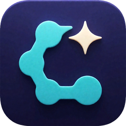

连接 ComfyUI，按需发现工具与启动本地服务。
透明四角 · Krea 2 + Photoshop · 256 × 256 RGBA
工具发现不会启动 ComfyUI 或加载模型。
禁用或卸载仅停止本插件进程；保留模型、工作流与图片。
仅保存时更新配置，不会安装模型或 Python 依赖。
仅保留加载入口，需要时再展开 3 个 ComfyUI 工具；不启动服务。
工具懒加载控制模型上下文；按需启动控制本地进程，两者独立。